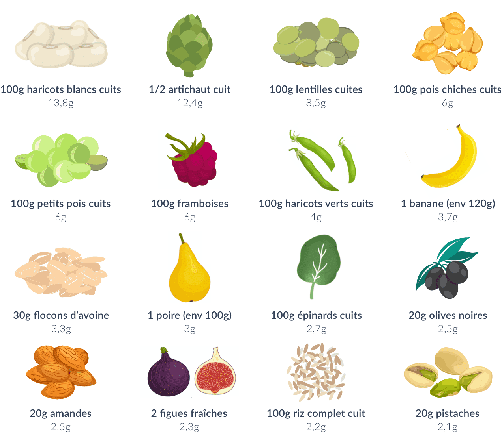

Les fibres jouent un rôle indispensable sur notre santé. Or, notre consommation journalière est d’environ 20g pour les hommes et 18g pour les femmes, alors que les recommandations de l’ANSES sont de 30g par jour.
Qu’est-ce que les fibres ?
Les fibres font en réalité partie de la famille des glucides. Mais, contrairement à l’amidon ou au sucre, les fibres sont des sucres complexes qui ne sont ni digérés ni absorbés par le corps. Elles n’ont donc aucune valeur nutritionnelle.
Elles jouent cependant un rôle indispensable sur le transit intestinal et sur la santé en général.
Il existe deux grands types de fibres :
- Les fibres solubles : elles se dispersent dans l’eau et forment un gel visqueux dans l’organisme au contact de l’eau.
- Les fibres insolubles : elles ne se dissolvent pas dans l’eau mais absorbent l’eau, un peu comme une éponge, et ont ainsi un pouvoir de gonflement élevé.
La grande majorité des aliments fibreux contiennent à la fois des fibres solubles et des fibres insolubles, qui présentent toutes les deux des bienfaits différents. Par exemple, si la chair des fruits et légumes est surtout riche en fibres solubles, leur peau contient quant à elle essentiellement des fibres insolubles.
Les fibres, un allié santé essentiel
Tout d’abord, les fibres permettent de réguler la glycémie. En effet, elles vont former un gel visqueux dans l’intestin qui va permettre de ralentir l’absorption du glucose. La glycémie va s’élever de façon moins importante après un repas. Les fibres permettent ainsi d’éviter des variations importantes de glycémie, qui peuvent engendrer fatigue, prise de poids, et réduction de la sensibilité à l’insuline (voir notre article sur les glucides). Elles sont ainsi un allié dans la prévention du diabète. Une meilleure régulation de la glycémie joue aussi un rôle important dans la prévention des maladies cardio-vasculaires.
Les fibres jouent également un rôle important sur la satiété et donc sur la gestion du poids. Au-delà de leur rôle sur la glycémie, les fibres vont aussi avoir un effet rassasiant en se gorgeant d’eau et ainsi permettre de réguler son appétit. Par ailleurs, les aliments riches en fibres nécessitent plus de mastication. Or, la mastication joue un rôle indispensable sur le rassasiement : elle sert notamment à analyser et à quantifier ce qui entre dans notre bouche, et contribue ainsi à la satiété. Selon une étude parue dans Annals of Internal Medicine, on perd presque autant de poids en ajoutant tous les jours 30 grammes de fibres à son alimentation qu’en réduisant drastiquement ses apports caloriques, en sel, en sucres et en graisses saturées.
Par ailleurs, les fibres sont essentielles pour assurer un bon transit intestinal. En effet, les fibres insolubles vont se gonfler d’eau et augmenter le volume le volume du bol alimentaire, ce qui va faciliter son évacuation par les selles. Consommer suffisamment de fibres permet ainsi de lutter contre la constipation.
Les fibres vont également permettre de limiter le temps de contact entre la muqueuse intestinale et les toxines (pesticides, additifs alimentaires, alcool, etc.). Les fibres permettent ainsi de diminuer les risques de cancer du côlon car le tube digestif est moins exposé aux toxines.
Les aliments riches en fibres
On retrouve des fibres dans tous les végétaux, et notamment dans :
- Les fruits : bananes, pommes, poires, framboises, figues, nectarines, etc.
- Les légumes : artichauts, épinards, haricots verts, brocolis, chou-fleur, etc.
- Les légumineuses : lentilles, fèves, pois chiches, haricots blancs, etc.
- Les fruits à coque : amandes, pistaches, cacahuètes, noix, noisettes, etc.
- Les produits céréaliers : avoine, seigle, quinoa, riz complet, pain complet, etc.

Quelques astuces pour consommer plus de fibres
Tout d’abord, il est important d’augmenter sa consommation de fibres progressivement. En effet, la hausse de l’apport en fibres peuvent poser quelques inconvénients au niveau intestinal. Il est nécessaire de laisser le temps au système digestif de s’adapter. Il faut aussi s’assurer de bien s’hydrater tout au long de la journée afin de favoriser l’écoulement des fibres.
- Consommez un vrai fruit au petit-déjeuner plutôt qu’un jus de fruits
- Consommez les fruits et légumes avec la peau (et choisissez-les bio car les pesticides se concentrent essentiellement dans la peau)
- Si vous avez une sensibilité intestinale, privilégiez les légumes cuits car la cuisson rend les fibres plus digestes
- Ajoutez des oléagineux (amandes, noisettes, noix) à votre collation, dans vos yaourts ou encore dans vos salades
- Privilégiez les céréales complètes : riz complet, pain complet, pâtes complètes, etc.
- Consommez au moins 3 à 4 portions de légumes et 2 fruits par jour
- Pensez aux légumineuses (lentilles, haricots blanc, pois chiches, etc.), qui sont très riches en fibres mais aussi en protéines et qui peuvent ainsi remplacer la viande pour certains repas
- Substituez une partie de la farine blanche dans vos préparations pour de la farine semi-complète ou complète
- MEtude NutriNet-Sante : https://info.etude-nutrinet-sante.fr/protectednew/pdf/DOSSIER_PRESSE_Nutrinet-Sante_22_11_12.pdf
- Feder D, Fonseca FLA. Chapter 2 - The Mechanism of Fiber Effects on Insulin Resistance. In: Samaan RA, ed. Dietary Fiber for the Prevention of Cardiovascular Disease. Academic Press; 2017:23-33. doi:10.1016/B978-0-12-805130-6.00002-1
- Patel S. Anti-Obesity and Anti-Diabetes Foods: High Fibre Diets. In: Melton L, Shahidi F, Varelis P, eds. Encyclopedia of Food Chemistry. Oxford: Academic Press; 2019:248-252. doi:10.1016/B978-0-08-100596-5.21734-4
- De Vadder F, Kovatcheva-Datchary P, Goncalves D, Vinera J, Zitoun C, Duchampt A, Bäckhed F, Mithieux G. Microbiota-generated metabolites promote metabolic benefits via gut-brain neural circuits. Cell. 2014 Jan 16;156(1-2):84-96. doi: 10.1016/j.cell.2013.12.016. Epub 2014 Jan 9. PubMed PMID: 24412651.
- Threapleton DE, Greenwood DC, Evans CE, Cleghorn CL, Nykjaer C, Woodhead C, Cade JE, Gale CP, Burley VJ. Dietary fibre intake and risk of cardiovascular disease: systematic review and meta-analysis. BMJ. 2013 Dec 19;347:f6879. doi: 10.1136/bmj.f6879. Review. PubMed PMID: 24355537; PubMed Central PMCID: PMC3898422.
- Imai S, Fukui M, Kajiyama S. Effect of eating vegetables before carbohydrates on glucose excursions in patients with type 2 diabetes. J Clin Biochem Nutr. 2014 Jan;54(1):7-11. doi: 10.3164/jcbn.13-67. Epub 2013 Dec 27. Review. PubMed PMID: 24426184; PubMed Central PMCID: PMC3882489.
- BROWNLEE, Iain A., CHATER, Peter I., PEARSON, Jeff P., et al. Dietary fibre and weight loss: Where are we now?. Food Hydrocolloids, 2017, vol. 68, p. 186-191.
- Chandalia M, Garg A, Lutjohann D, von Bergmann K, Grundy SM, Brinkley LJ. Beneficial effects of high dietary fiber intake in patients with type 2 diabetes mellitus. N Engl J Med. 2000 May 11;342(19):1392-8. PubMed PMID: 10805824.
- Kim Y, Je Y. Dietary fibre intake and mortality from cardiovascular disease and all cancers: A meta-analysis of prospective cohort studies. Arch Cardiovasc Dis. 2016 Jan;109(1):39-54. doi: 10.1016/j.acvd.2015.09.005. Epub 2015 Dec 18. Review. PubMed PMID: 26711548.
- https://ciqual.anses.fr/